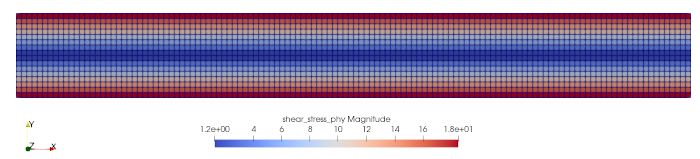
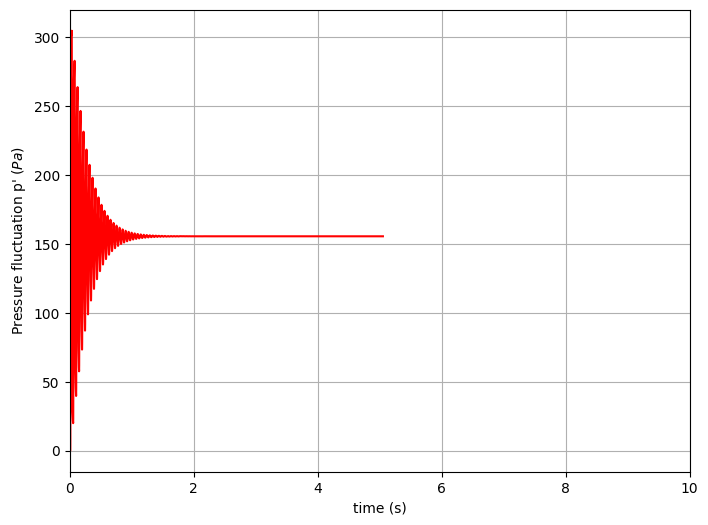
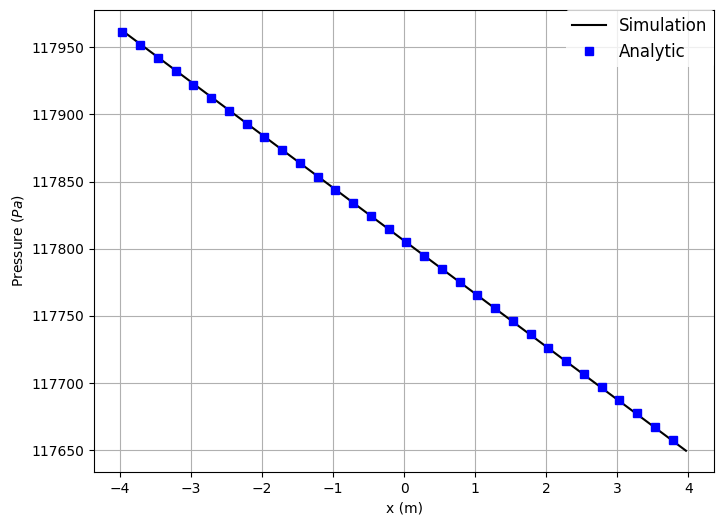

Warning
WORK IN PROGRESS
Navigate: ← Toolchain | Overview | Boundary Conditions →
Tracking quantities during the simulation run.
In this tutorial we deal with tracking, that is tracking flow quantities during the simulation run and visualizing them.
An extensive documentation of the tracking features can be found in tem_tracking_module and in its documentation page Two additional examples dealing with shapes are given in tem_load_shapes.
In the musubi.lua file, there has to be a section called tracking.
In order to get a simulation output for harvester you set up some
information for each tracked quantity.
These are in general:
This defines the name of the tracked quantity.
What variable values are tracked? (i.e. pressure, velocity)
How does the geometry look like in the mesh? Shall it be a point or a line? Where is it placed? These are the questions you are supposed to answer here.
This behaves similar to the general time settings in musubi.lua . You have
to define a starting and an end point for the tracked quantity. In addition
to that, you must give Musubi information about the time interval, when
i.e. the pressure gets its values during the simulation.
You can choose between these three formats:
vtk
This format creates results in the Treelm format. It is used to process
input files for Paraview. When using this format, make sure there is a
directory called output in the simulation path.
(This has been done in the last tutorial as well).
Here you can see another example (planeXY) :

ascii
This output format creates a .res file that contains the tracked quantities like pressure and velocity over certain timesteps. It is normally used for 1D shapes (a single point). Nevertheless, it is possible to track the variable values over a 2D shape. In this case, a reduction is used. There are picked up certain points of the shape and they are reduced to a single result. The table in the resulting file is build up as following. In the first column, you can find the time (t_0, t_1, t_2, ..., t_n). It is followed by the variable values. Every row replaces one timestep with values for each variable. Here you can see an example that is plotted by GNUplot (probeAtCenter):

asciiSpatial
This kind of format creates not only one res. file. Moreover it creates one .res file for each timestep. This means, that you get a table with the x, y and z coordinates of the shape in the first three columns. These are followed by the different variable values like pressure and shear stress. In summary, you get all these information for each timestep in another file. You can plot these values as well, so that you get something like this (pressAlongLength):

folder
Here, you have to define the location where your resulting files shall be dumped.
Here is a demonstration example of how a tracking section in the musubi.lua file can look like:
-- probeAtCenter
tracking = {
{
label = 'probePressure',
variable = {'pressure_phy'},
shape = {kind = 'canoND', object = {origin ={0.0,0.,0.} } },
time_control = {min = {iter=1}, interval = {iter=1}},
output = {format = 'ascii'}, folder = './tracking/'
}
}
You have to define your variable values first before you can track them. Have a look here on how to do this.
Here ends the tutorial for tracking quantities during the simulation. You can go on for more information about boundary conditions in the next tutorial.
Next chapter: Boundary Conditions →